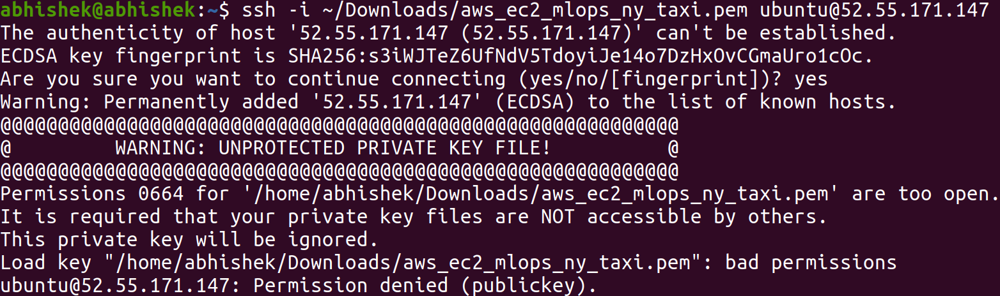
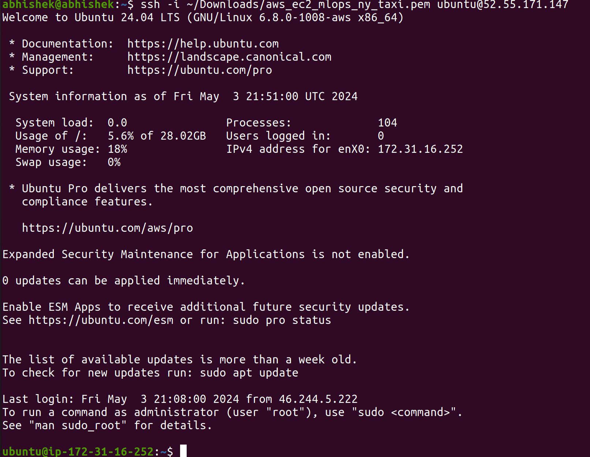

Tech Blog: AWS instance setup and usage for deploying MLFlow based Machine Learning pipelines
Posted by Abhishek R. S. on 2024-05-03, updated on 2024-05-07
The blog is about...
This is about setup and usage guide for AWS instance for deploying Machine Learning pipeline.
1) EC2 instance Setup
1.1) Basic Instructions
The first step is to setup an EC2 instance. This can be done via services -> compute -> EC2 -> launch an instance.
Setup the instance with the relevant configuration that is needed.
-
The name of the instance
-
Application and OS image (Ubuntu, is there a better option for developers 😂)
with the appropriate version and architecture
-
Instance type (the one with the free tier 😅, t2.micro or t3.micro, of course initially)
-
Key pair login by create new key pair with key pair type=RSA and private key file format=.pem.
A key.pem file will be downloaded. This can be used for the remote login to the EC2 instance.
-
Configure storage by selecting the maximum amount of storage available (for free tier)
-
Launch instance with default configurations for the rest
1.2) Remote login to the EC2 instance
Go to instances and select the instance that you just created. Use the public IPv4 address for login.
The following command can be used for remote login.
ssh -i ~/Downloads/key.pem ubuntu@IPv4
I faced one error while trying remote login. The following image shows the error.

This can be resolved with a simple permission change for the key.pem file.
This can be done with the following command chmod 600 key.pem.
Login to the EC2 instance with a sigh of relief now 😅. The following
image shows a successful login.

Once you reach this stage, you can do whatever you want. The next step would obviously
be to setup python virtual env and install relevant packages. An important package to
install is the awscli for managing the aws services using the command-line.
1.3) Setting up AWS key and secret access key
This can be done via account -> security credentials -> create access key -> copy the access key and secret access key.
1.4) Install awscli and boto3
These will have to be installed even on a local machine. This is the case even if the training happens
on a local machine and the tracking and storage happens on the AWS cloud.
Run pip install awscli boto3 to install.
Run aws configure and enter the access keys.
Run aws s3 ls to list the AWS s3 buckets.
1.5) Run MLFlow server
Run the following command to start the MLFlow server.
mlflow server -h 0.0.0.0 -p 5000 --backend-store-uri postgresql://DB_USERNAME:DB_PASSWORD@DB_ENDPOINT:DB_PORT/DB_NAME --default-artifact-root s3://S3_BUCKET_NAME
If you get the below mentioned error,
File "/home/ubuntu/ml_env/lib/python3.12/site-packages/mlflow/cli.py", line 356, in <module>
type=click.Choice([e.name for e in importlib.metadata.entry_points().get("mlflow.app", [])]),
AttributeError: 'EntryPoints' object has no attribute 'get'
Then make changes to the following file
virtual_env/ml_env/lib/python3.12/site-packages/mlflow/cli.py
The error is in cli.py, just substitute get("mlflow.app", []) by select(group="mlflow.app")
If you get the following error
ModuleNotFoundError: No module named 'psycopg2'
then install the psycopg2 using the following command
pip install psycopg2-binary
Add an inbound rule for the security group to allow access to port 5000.
More info on the inbound rule setup can be found in MLFlow setup on AWS.
Now, the MLFlow UI can be accessed in http://EC2_PUBLIC_DNS:5000. This can also be used as the tracking_uri in MLFlow.
2) Configuring an S3 bucket
This can be done via services -> storage -> S3 -> create bucket by choosing a unique
bucket name with default settings.
3) Configuring and setting up an instance of RDS
This can be done via services -> database -> RDS -> create database.
-
Select PostgreSQL as backend database for the MLFlow. Choose the free tier template 😅.
-
Choose the database instance identifier name, master username, and setup auto generate password.
-
Select appropriate instance configuration and storage required.
-
Select appropriate instance configuration and storage required.
-
Let the connectivity, tags and monitoring be defaults. Choose password authentication for the database.
-
In additional configuration, choose an initial database name.
-
Do not forget to make a copy of the username and password to make connection to the database 😅.
-
Edit security groups and add an inbound rule for PostgresSQL for the EC2 instance to connect to the database.
-
Finally, make a note of the endpoint and port to the database.
Main takeaway
I had a positive learning experience and learned that it is relatively easy to setup and
use an AWS EC2 instance, S3 bucket and RDS for configuring MLFlow! This blog can be used for deploying complex ML pipelines on AWS.
This is not my first time setup / use of EC2 instance and S3 bucket 😅 but a first time configuring RDS and MLFlow on AWS by myself.
|